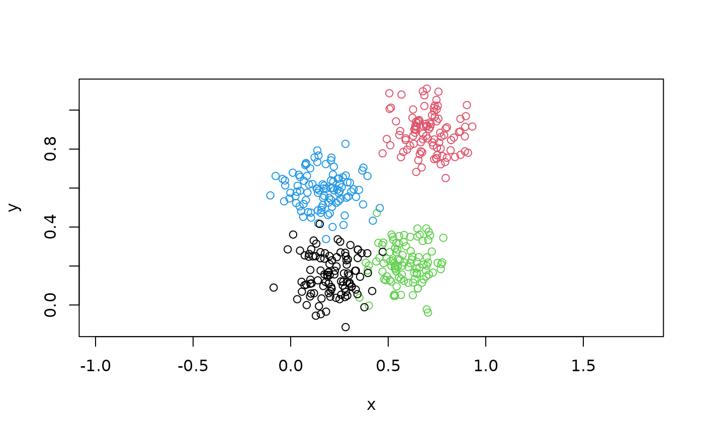
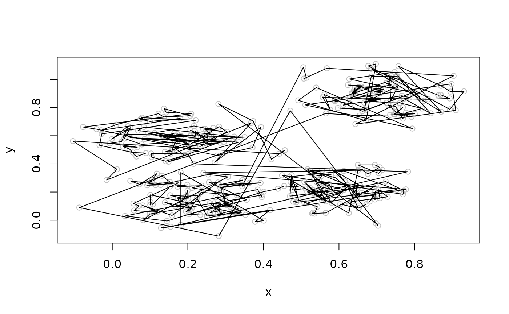
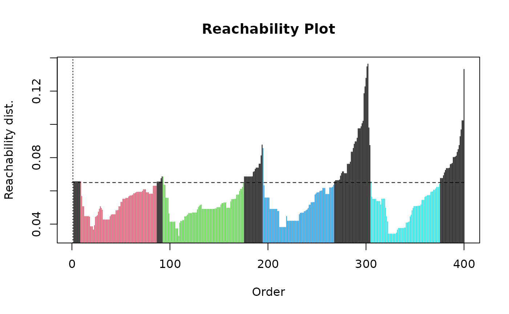
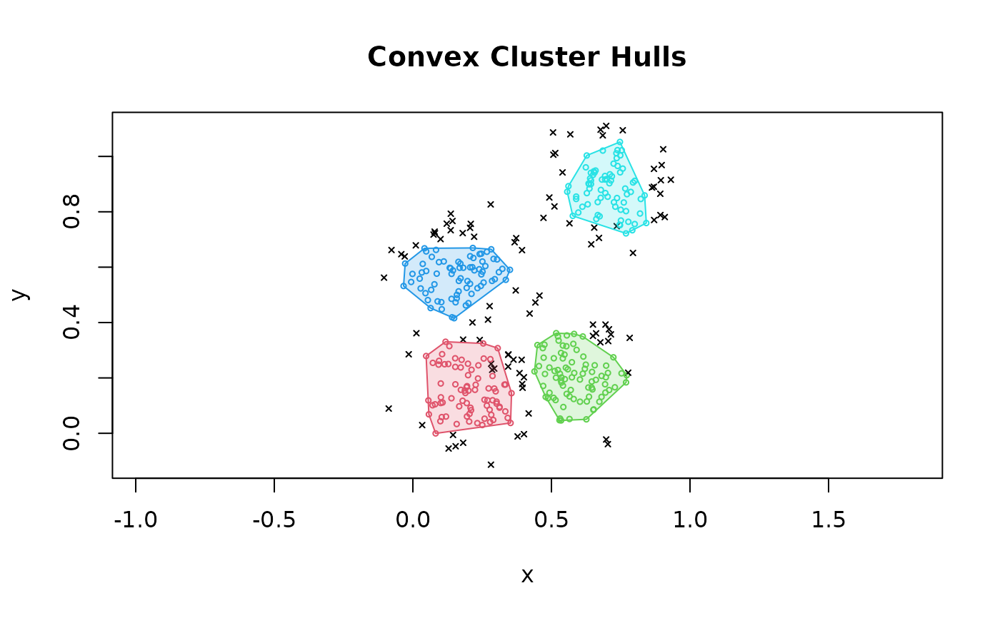
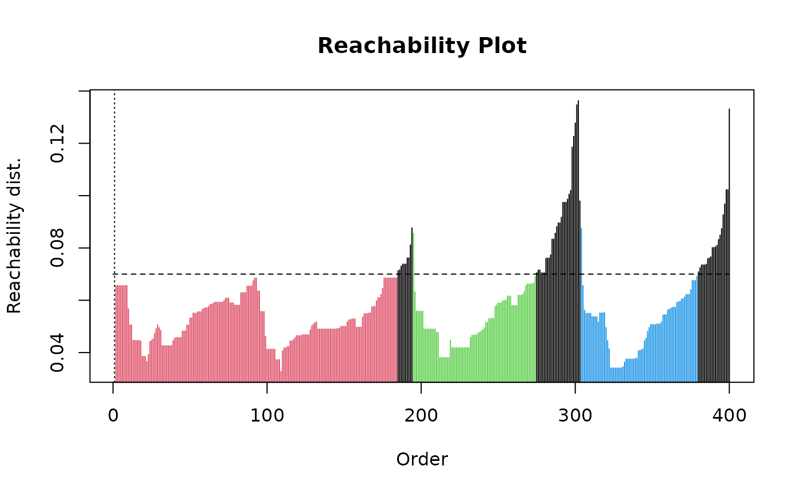
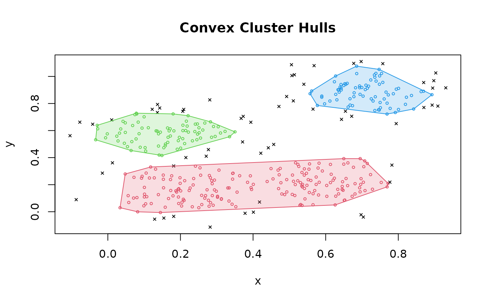
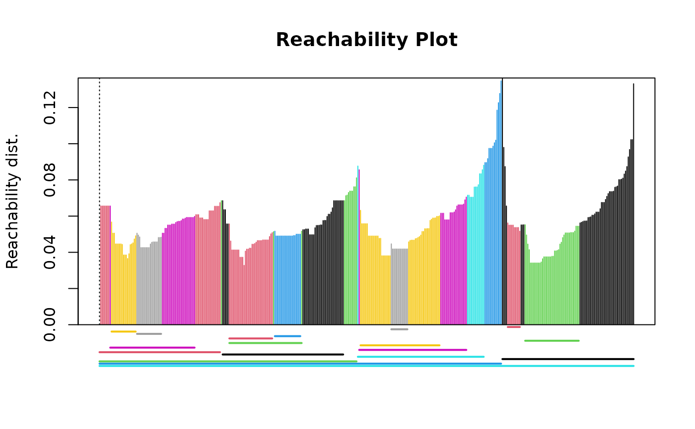
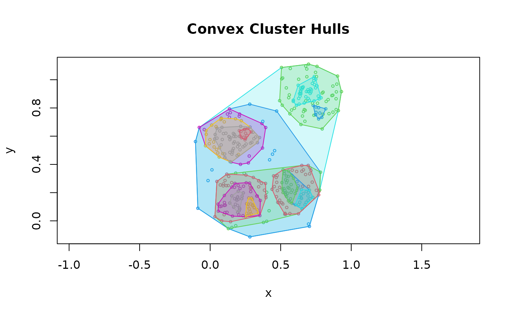
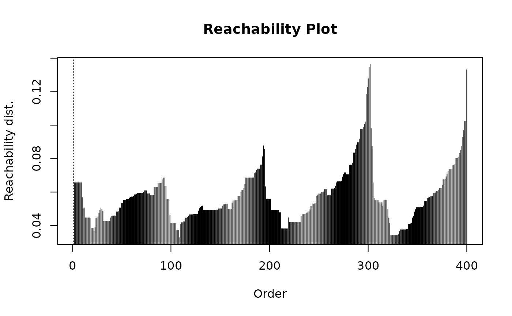

Ordering Points to Identify the Clustering Structure (OPTICS)
Source:R/optics.R, R/optics_extractXi.R, R/predict.R
optics.RdImplementation of the OPTICS (Ordering points to identify the clustering structure) point ordering algorithm using a kd-tree.
Usage
optics(x, eps = Inf, minPts = 5, ...)
# S3 method for class 'optics'
print(x, ...)
# S3 method for class 'optics'
plot(x, cluster = TRUE, predecessor = FALSE, ...)
# S3 method for class 'optics'
as.reachability(object, ...)
# S3 method for class 'optics'
as.dendrogram(object, ...)
extractDBSCAN(object, eps_cl)
extractXi(object, xi, minimum = FALSE, correctPredecessors = TRUE)
# S3 method for class 'optics'
predict(object, newdata, data, ...)Arguments
- x
a data matrix or a dist object.
- eps
maximum epsilon neighborhood size only used for performance. The default
Infdoes not restrict the neighborhood and gives the complete reachability structure.NULLis treated asInf. See details.- minPts
the parameter is used to identify dense neighborhoods. The core distance of a point is the distance to its (
minPts - 1)-th nearest neighbor (minPtsincludes the point itself). It is used to calculate the reachability distances and controls the smoothness of the reachability plot. Default is 5 points.- ...
additional arguments are passed on to fixed-radius nearest neighbor search algorithm. See
frNN()for details on how to control the search strategy.- cluster, predecessor
plot clusters and predecessors.
- object
clustering object.
- eps_cl
Threshold to identify clusters (
eps_cl <= eps).- xi
Steepness threshold between 0 and 1 (exclusive) to identify clusters hierarchically using the Xi method.
- minimum
logical, representing whether or not to extract the minimal (non-overlapping) clusters in the Xi clustering algorithm.
- correctPredecessors
logical, correct a common artifact by pruning the steep up area for points that have predecessors not in the cluster–found by the ELKI framework, see details for
extractXi().- newdata
new data points for which the cluster membership should be predicted.
- data
the data set used to create the clustering object.
Value
An object of class optics with components:
- eps
value of
epsparameter.- minPts
value of
minPtsparameter.- order
optics order for the data points in
x.- reachdist
reachability distance for each data point in
x.- coredist
core distance for each data point in
x.
For extractDBSCAN(), in addition the following
components are available:
- eps_cl
the value of the
eps_clparameter.- cluster
assigned cluster labels in the order of the data points in
x.
For extractXi(), in addition the following components
are available:
- xi
Steepness threshold
xi.- cluster
assigned cluster labels in the order of the data points in
x.- clusters_xi
data.frame containing the start and end of each cluster found in the OPTICS ordering.
Details
The Algorithm
This implementation of OPTICS implements the original
algorithm as described by Ankerst et al (1999). OPTICS is an ordering
algorithm with methods to extract a clustering from the ordering.
While using similar concepts as DBSCAN, minPts in OPTICS has a different
effect than in DBSCAN. Since it is also used to calculate the reachability
distance, larger values will make the reachability distance plot smoother.
The parameter eps is optional. It represents
an upper limit for the neighborhood size that can be used to reduce
computational complexity for large data sets. The default eps = Inf does
not limit the neighborhood size and gives the complete reachability
structure.
OPTICS linearly orders the data points such that points which are spatially
closest become neighbors in the ordering. The closest analog to this
ordering is dendrogram in single-link hierarchical clustering. The algorithm
also calculates the reachability distance for each point.
plot() (see reachability_plot)
produces a reachability plot which shows each points reachability distance
between two consecutive points
where the points are sorted by OPTICS. Valleys represent clusters (the
deeper the valley, the more dense the cluster) and high points indicate
points between clusters.
Specifying the Data
If x is specified as a data matrix, then Euclidean distances and fast
nearest neighbor lookup using a kd-tree are used. See kNN() for
details on the parameters for the kd-tree.
The effect of eps
The default eps = Inf (NULL is also treated as Inf) does not restrict
the neighborhood and results in the complete reachability structure (only
the first reachability distance is undefined). This is the original OPTICS
behavior. Computation in this implementation uses
Prim's algorithm on the reachability graph using core distances
and distances that are calculated on the fly. This needs only \(O(n)\)
additional memory, but the running time is quadratic in the number of data
points, so it can still be slow for large data sets.
A finite eps restricts the maximum epsilon neighborhood size, which can
improve performance significantly for large data sets. If eps is too small,
then points can have undefined core distances (they are noise) and
reachability distances. Undefined reachability distances are
shown as dashed lines in the reachability plot, and the ordering can
differ from the one for eps = Inf. optics() gives a warning if a finite
eps results in undefined reachability distances in addition to the first
one. If the plot shows too many dashed lines then eps should be increased.
Ties
OPTICS repeatedly processes the unprocessed point with the smallest reachability distance. If several points have the same reachability distance, ties are broken by the position of the point in the data: the point with the lower id (row number) is processed first. This follows the ELKI implementation. With ties, the returned order (and therefore the reachability plot and extracted clusters) can depend on the row order of the data. Ties are common for data with repeated values or for data on a regular grid.
Extracting a Clustering
Several methods to extract a clustering from the order returned by OPTICS are implemented:
extractDBSCAN()extracts a clustering from an OPTICS ordering that is similar to what DBSCAN would produce with an eps set toeps_cl(see Ankerst et al, 1999). The only difference to a DBSCAN clustering is that OPTICS is not able to assign some border points and reports them instead as noise.extractXi()extract clusters hierarchically specified in Ankerst et al (1999) based on the steepness of the reachability plot. One interpretation of thexiparameter is that it classifies clusters by change in relative cluster density. The algorithm is a port of the implementation in the ELKI framework (version 0.8.0). It follows Ankerst et al (1999) with the improvements described in Schubert and Gertz (2018). WithcorrectPredecessors = TRUE(the default), the end of each cluster is shortened so that the predecessor of its last point is inside the cluster. This step is not part of the original algorithm and removes a common artifact (found by the ELKI framework). Clusters with fewer thanminPtspoints are not reported.
References
Mihael Ankerst, Markus M. Breunig, Hans-Peter Kriegel, Joerg Sander (1999). OPTICS: Ordering Points To Identify the Clustering Structure. ACM SIGMOD international conference on Management of data. ACM Press. pp. 49-60. doi:10.1145/304181.304187
Hahsler M, Piekenbrock M, Doran D (2019). dbscan: Fast Density-Based Clustering with R. Journal of Statistical Software, 91(1), 1-30. doi:10.18637/jss.v091.i01
Erich Schubert, Michael Gertz (2018). Improving the Cluster Structure Extracted from OPTICS Plots. In Lernen, Wissen, Daten, Analysen (LWDA 2018), pp. 318-329.
See also
reachability, dbscan(), hdbscan().
Other clustering functions:
dbscan(),
extractFOSC(),
hdbscan(),
jpclust(),
ncluster(),
sNNclust()
Examples
set.seed(2)
n <- 400
x <- cbind(
x = runif(4, 0, 1) + rnorm(n, sd = 0.1),
y = runif(4, 0, 1) + rnorm(n, sd = 0.1)
)
plot(x, col=rep(1:4, times = 100))

### run OPTICS (Note: we use the default eps = Inf)
res <- optics(x, minPts = 10)
res
#> OPTICS ordering/clustering for 400 objects.
#> Parameters: minPts = 10, eps = Inf, eps_cl = NA, xi = NA
#> Available fields: order, reachdist, coredist, predecessor, minPts, eps,
#> eps_cl, xi
### get order
res$order
#> [1] 1 13 17 21 89 149 165 193 209 57 169 241 153 177 253 281 285 321
#> [19] 29 257 333 357 77 105 293 301 229 145 181 9 117 101 185 317 377 381
#> [37] 385 393 73 237 273 365 369 397 245 305 249 337 349 157 309 205 213 345
#> [55] 33 49 97 41 83 25 389 121 5 329 161 53 85 141 189 217 341 225
#> [73] 61 69 261 81 173 221 125 289 297 313 129 133 109 197 59 137 363 93
#> [91] 277 35 191 91 147 201 203 231 11 227 235 271 299 311 351 71 375 379
#> [109] 399 291 23 55 219 323 275 47 263 3 87 175 331 367 171 247 251 319
#> [127] 339 111 223 51 63 151 31 131 143 207 303 343 391 99 115 215 283 287
#> [145] 359 43 183 27 79 199 243 295 67 347 139 187 255 39 107 195 239 119
#> [163] 179 395 371 123 159 211 103 355 327 7 95 167 267 155 15 135 259 315
#> [181] 335 383 387 113 279 373 4 127 265 353 37 45 19 224 172 8 144 160
#> [199] 192 208 232 28 72 100 256 260 288 336 368 32 96 16 88 108 120 252
#> [217] 268 292 156 124 188 220 304 340 356 388 56 136 168 332 372 236 244 76
#> [235] 184 392 380 348 116 112 280 64 52 148 152 352 360 361 284 48 216 84
#> [253] 36 92 20 80 180 212 128 200 264 272 12 196 364 132 40 324 68 164
#> [271] 176 308 316 312 384 248 300 204 328 344 140 24 296 320 60 228 276 44
#> [289] 65 233 400 163 240 376 104 396 307 75 14 325 269 82 66 70 10 18
#> [307] 158 214 226 254 246 314 350 378 366 290 342 38 190 6 34 26 98 174
#> [325] 210 282 298 310 362 374 122 318 46 142 278 330 358 386 62 118 114 202
#> [343] 322 198 286 294 242 394 30 130 162 266 2 182 382 74 126 170 194 354
#> [361] 186 150 206 234 86 306 102 338 134 346 250 78 94 138 390 42 58 274
#> [379] 258 90 146 218 222 370 326 110 270 334 166 178 398 262 22 50 238 106
#> [397] 154 230 302 54
### plot produces a reachability plot
plot(res)
 ### plot the order of points in the reachability plot
plot(x, col = "grey")
polygon(x[res$order, ])
### plot the order of points in the reachability plot
plot(x, col = "grey")
polygon(x[res$order, ])

### extract a DBSCAN clustering by cutting the reachability plot at eps_cl
res <- extractDBSCAN(res, eps_cl = .065)
res
#> OPTICS ordering/clustering for 400 objects.
#> Parameters: minPts = 10, eps = Inf, eps_cl = 0.065, xi = NA
#> The clustering contains 4 cluster(s) and 95 noise points.
#>
#> 0 1 2 3 4
#> 95 78 83 73 71
#>
#> Available fields: order, reachdist, coredist, predecessor, minPts, eps,
#> eps_cl, xi, cluster
plot(res) ## black is noise

hullplot(x, res)

### re-cut at a higher eps threshold
res <- extractDBSCAN(res, eps_cl = .07)
res
#> OPTICS ordering/clustering for 400 objects.
#> Parameters: minPts = 10, eps = Inf, eps_cl = 0.07, xi = NA
#> The clustering contains 3 cluster(s) and 60 noise points.
#>
#> 0 1 2 3
#> 60 184 80 76
#>
#> Available fields: order, reachdist, coredist, predecessor, minPts, eps,
#> eps_cl, xi, cluster
plot(res)

hullplot(x, res)

### extract hierarchical clustering of varying density using the Xi method
res <- extractXi(res, xi = 0.01)
res
#> OPTICS ordering/clustering for 400 objects.
#> Parameters: minPts = 10, eps = Inf, eps_cl = NA, xi = 0.01
#> The clustering contains 18 cluster(s) and 0 noise points.
#>
#> Available fields: order, reachdist, coredist, predecessor, minPts, eps,
#> eps_cl, xi, cluster, clusters_xi
plot(res)

hullplot(x, res)
#> Warning: Not enough colors. Some colors will be reused.

# Xi cluster structure
res$clusters_xi
#> start end cluster_id
#> 1 1 91 1
#> 2 1 193 2
#> 3 1 301 3
#> 4 1 400 4
#> 5 9 72 5
#> 6 10 28 6
#> 7 29 47 7
#> 8 93 183 8
#> 9 98 130 9
#> 10 98 152 10
#> 11 132 151 11
#> 12 194 288 12
#> 13 195 275 13
#> 14 196 255 14
#> 15 219 231 15
#> 16 302 400 16
#> 17 306 315 17
#> 18 319 359 18
### use OPTICS on a precomputed distance matrix
d <- dist(x)
res <- optics(d, minPts = 10)
plot(res)
